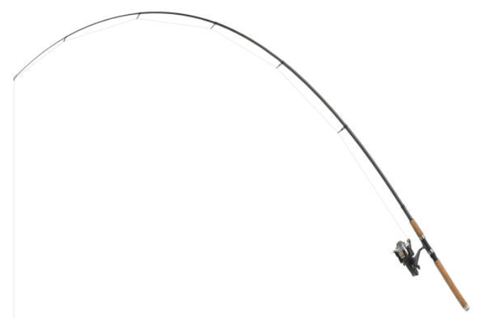
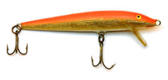
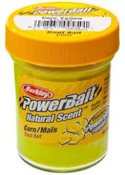

The Tackle Box
Essential Gear for Fishing
So you're just getting started as an angler and you don't have any equipment. What is considered absolutely essential for a fisherman who wants to test the waters? The key takeaway is that you don't need to go buy the latest and greatest gear to be successful at fishing. Stick to the basics listed below and you will do just fine.
The Rod
The most recognizable part of the fishing pole, the fishing rod, is designed to hold the reel and fishing line, flexing when a fish (or rock) grabs your bait. The size and strength of a fishing pole will be determined by where you are fishing and what kind of fish you wish to catch. Generally, the larger and less flex a rod has, the larger the fish you are aiming for. Deepsea fishing requires very large rods.

The Reel
The reel is the portion of the fishing pole that holds the line and allows the angler to wind the line back in after it is let out. There is more to a reel than that, however. A reel is maed up of gears, a spool of fishing line, and a bail. All of these parts work together to allow an angler to cast, reel, and control the drag when fishing.
The Line
The fishing line is used to pull the fish out of the water, however the strength of the line and the visibility of the line plays an important factor into the success of any angler. Fish don't have the best eyesight, but they can see nonetheless. Thus, if the fish can see your line, it is less likely to bite. Conversely, if your line is too thin, the line will break when attempting to bring in a larger fish.

The Hook/Lure
The hook is specifically designed to hold bait. Similarly, a lure can hold bait, but doesn't always need it. This is due to the lure's visual representation of something a fish might eat. A fly is a type of lure that requires a special fishing pole and mimics the look of flying bugs. Lures may have one or more hooks on them. If one plans to catch and release, purchasing hooks without barbs is more humane.

The Bait
The bait, while only essential if using hooks or lures that require it, is what attracts the fish via sight or smell. Bait can range from nightcrawlers, to small fish, to playdough-like powerbait. The key with any bait is to mimic the appearance and smell of the fish's typical food. In some cases, this is other fish or bugs. In the case that the fish were raised on a farm, they are used to eating pellet-like foods.

The Tacklebox
A tacklebox provides a valuable means to keep all of your gear organized. It is an inevitable fact that you will lose hooks, tangle your line, and suffer from stolen bait. The tacklebox gives you a backup plan.